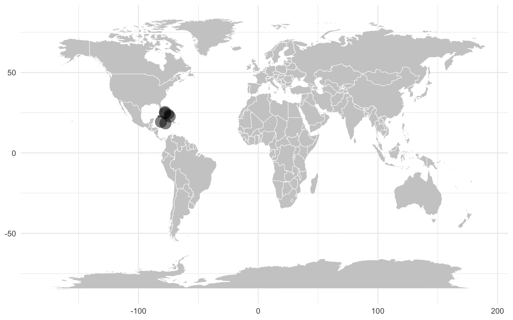

Chapter 2 Data summary
2.1 Load the data
The EHI pipeline outputs six data files in analysis batches. Each batch is assigned a batch code in the form of DMB1234. DMB stands for Dereplication & Mapping Batch, which is the final step of the EHI pipeline. The six output files are:
Microbiome count table ([BATCH]_counts.tsv.gz): this is a contingency table containing the number of sequencing reads from each sample mapped against each MAG, with MAG identifiers in rows and sample identifiers in columns.
Microbiome coverage table ([BATCH]_coverage.tsv.gz): it has the same structure as the count table, but contains breadth-of-coverage information of each MAG in each sample. In other words, it contains the fraction of the genomes covered by mapped reads in each sample.
Sample metadata table ([BATCH]_metadata.tsv.gz): it contains relevant metadata of the samples, including geographic origin, host species, sample type and statistics of sample preprocessing.
Microbiome metadata table ([BATCH]_mag_info.tsv.gz): it contains relevant metadata of the MAGs, including taxonomy, genome completeness, contamination/redundancy and other quality metrics.
Microbiome phylogenetic tree ([BATCH].tree.gz): this is the phylogenetic tree of the MAGs derived from the GTDB master tree after pruning all reference genomes. This file is used for phylogenetic analyses.
Microbiome functional attribute table ([BATCH]_merged_kegg.tsv.gz): this is a contingency table containing the fullness levels of hundreds of KEGG modules, with MAG identifiers in rows and KEGG module identifiers in columns. This table is used for functional analyses.
You first need to download these documents from the server, using the links in the EHI data report. In this workflow, we assume the files are downloaded to the folder “data” in your working environment.
# Batch
batch="DMB0038"
# Microbiome count table
count_table <- read.table(
gunzip(paste0("data/",batch,"_counts.tsv.gz"), remove=FALSE, overwrite=TRUE),
sep="\t",row.names=1,header=T)
# Microbiome coverage table
coverage_table <- read.table(
gunzip(paste0("data/",batch,"_coverage.tsv.gz"), remove=FALSE, overwrite=TRUE),
sep="\t",row.names=1,header=T)
# Sample metadata table
sample_table <- read.table(
gunzip(paste0("data/",batch,"_metadata.tsv.gz"), remove=FALSE, overwrite=TRUE),
sep="\t",header=T) %>%
rename(sample=EHI_plaintext) # rename column
# Microbiome metadata table
mags_table <- read.table(
gunzip(paste0("data/",batch,"_mag_info.tsv.gz"), remove=FALSE, overwrite=TRUE),
sep="\t",header=T)
rownames(mags_table) <- mags_table[,1] # add row names
# Microbiome phylogenetic tree
tree <- read.tree(
gunzip(paste0("data/",batch,".tree.gz"), remove=FALSE, overwrite=TRUE))
# Microbiome functional attribute table
kegg_table <- read.table(
gunzip(paste0("data/",batch,"_merged_kegg.tsv.gz"), remove=FALSE, overwrite=TRUE),
sep="\t",header=T, row.names=1)2.2 General data statistics
You can then generate some general statistics to obtain an overview of your data.
Amount of discarded data
The value is in GBs (gigabases)
sum(round(((sample_table$metagenomic_bases+sample_table$host_bases)/(1-sample_table$bases_lost_fastp_percent))-(sample_table$metagenomic_bases+sample_table$host_bases)))/1000000000[1] 6.4109732.3 General MAG statistics
2.4 Geographic distribution
You can visualise the origin of your samples using the geographic information available in the sample metadata table. First you need to generate summary information containing unique sampling sites and the number of samples per site.
#Summarise for generating map
options(dplyr.summarise.inform = FALSE)
sample_table_summary <- sample_table %>%
#Group by geography and count samples
select(sample, latitude, longitude, country) %>%
group_by(latitude, longitude) %>%
summarize(count = n()) %>%
ungroup()Then, this new table can be used to generate the map with location shape sizes indicating the number of samples.
sample_table_summary %>%
ggplot(.) +
#render map
geom_map(
data=map_data("world"),
map = map_data("world"),
aes(long, lat, map_id=region),
color = "white", fill = "#cccccc", linewidth = 0.2
) +
#render points
geom_point(
aes(x=longitude,y=latitude, size=count),
alpha=0.5, shape=16) +
#add general plot layout
theme_minimal() +
theme(legend.position = "none",
axis.title.x=element_blank(),
axis.title.y=element_blank()
)
You can also plot the summary table.
| sample | sample_type | region | country | latitude | longitude |
|---|---|---|---|---|---|
| EHI00678 | Faecal | San Salvador | Bahamas | 24.05862 | -74.46739 |
| EHI00682 | Faecal | Chub Cay | Bahamas | 25.40986 | -77.87054 |
| EHI00743 | Faecal | Cockpit | Jamaica | 18.38248 | -77.51726 |
| EHI00679 | Faecal | Chub Cay | Bahamas | 25.40986 | -77.87054 |
| EHI00674 | Faecal | Cockpit | Jamaica | 18.38248 | -77.51726 |
| EHI00689 | Faecal | Andros | Bahamas | 24.66547 | -77.80168 |
| EHI00688 | Faecal | Acklins | Bahamas | 22.65397 | -73.93493 |
| EHI00690 | Faecal | Andros | Bahamas | 24.66547 | -77.80168 |
| EHI00692 | Faecal | Andros | Bahamas | 24.66547 | -77.80168 |
| EHI00753 | Faecal | Chub Cay | Bahamas | 25.40986 | -77.87054 |
| EHI00696 | Faecal | Grand Cayman | Cayman Islands | 19.32504 | -81.20698 |
| EHI00751 | Faecal | Cockpit | Jamaica | 18.38248 | -77.51726 |
| EHI00680 | Faecal | San Salvador | Bahamas | 24.05862 | -74.46739 |
| EHI00683 | Faecal | San Salvador | Bahamas | 24.05862 | -74.46739 |
| EHI00732 | Faecal | Soroa | Cuba | 22.77456 | -83.03659 |
| EHI00695 | Faecal | Grand Cayman | Cayman Islands | 19.32504 | -81.20698 |
| EHI00693 | Faecal | Andros | Bahamas | 24.66547 | -77.80168 |
| EHI00731 | Faecal | Acklins | Bahamas | 22.65397 | -73.93493 |
| EHI00675 | Faecal | Cockpit | Jamaica | 18.38248 | -77.51726 |
| EHI00686 | Faecal | Acklins | Bahamas | 22.65397 | -73.93493 |
| EHI00681 | Faecal | San Salvador | Bahamas | 24.05862 | -74.46739 |
| EHI00758 | Faecal | Soroa | Cuba | 22.77456 | -83.03659 |
| EHI00685 | Faecal | Acklins | Bahamas | 22.65397 | -73.93493 |
| EHI00752 | Faecal | Chub Cay | Bahamas | 25.40986 | -77.87054 |
| EHI00697 | Faecal | Grand Cayman | Cayman Islands | 19.32504 | -81.20698 |
| EHI00742 | Faecal | Cockpit | Jamaica | 18.38248 | -77.51726 |
| EHI00698 | Faecal | Grand Cayman | Cayman Islands | 19.32504 | -81.20698 |
| EHI00687 | Faecal | Acklins | Bahamas | 22.65397 | -73.93493 |
| EHI00684 | Faecal | Acklins | Bahamas | 22.65397 | -73.93493 |
| EHI00733 | Faecal | Soroa | Cuba | 22.77456 | -83.03659 |
| EHI00691 | Faecal | Andros | Bahamas | 24.66547 | -77.80168 |
| EHI00757 | Faecal | Chub Cay | Bahamas | 25.40986 | -77.87054 |
| EHI00699 | Faecal | Grand Cayman | Cayman Islands | 19.32504 | -81.20698 |
| EHI00677 | Faecal | San Salvador | Bahamas | 24.05862 | -74.46739 |
| EHI00700 | Faecal | Grand Cayman | Cayman Islands | 19.32504 | -81.20698 |
| EHI00730 | Faecal | Chub Cay | Bahamas | 25.40986 | -77.87054 |
| EHI00694 | Faecal | Andros | Bahamas | 24.66547 | -77.80168 |
| EHI00676 | Faecal | Cockpit | Jamaica | 18.38248 | -77.51726 |
2.5 Prepare the colour layout
For the sake of consistency through EHI projects, we have created a unified colour profile for bacterial and archaeal taxa. The palette assign similar colours to closely related phyla, and more distinct hues to distantly related phyla. The colour profile can be downloaded from Github, and store as an object in R for downstream analyses.
https://github.com/earthhologenome/EHI_taxonomy_colour/edit/main/README.md
# Download and load the phylum colour table
colours_URL="https://raw.githubusercontent.com/earthhologenome/EHI_taxonomy_colour/main/ehi_phylum_colors.tsv"
download.file(colours_URL, "data/ehi_phylum_colors.tsv")
ehi_phylum_colors <- read.table("data/ehi_phylum_colors.tsv",sep="\t",header=T,comment.char = "")
# Arrange colors alphabetically
colors_alphabetic <- ehi_phylum_colors %>%
right_join(mags_table, by=join_by(phylum == phylum)) %>%
arrange(match(genome, tree$tip.label)) %>%
select(phylum, colors) %>%
unique() %>%
arrange(phylum) %>%
select(colors) %>%
pull()